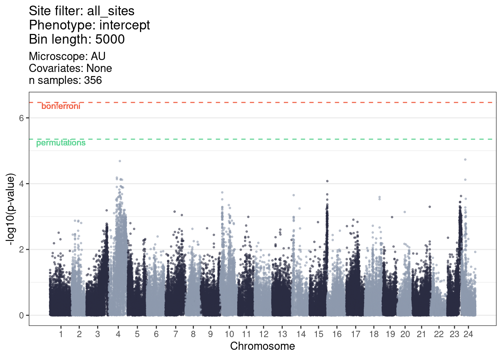

9 Association testing with only AU microscope
9.1 Load libraries and variables
library(tidyverse)
library(GridLMM)
library(KRLS)
GENO_FILE = "/nfs/research/birney/users/ian/somites/association_testing/20220214/all_sites/inputs/5000.rds"
PHENO_FILE = here::here("data/20220214_phenotypes.xlsx") # True phenotypes
GWLS_SOURCE_FILE = here::here("workflow/scripts/run_gwls_source.R")
MANHAT_SOURCE_FILE = here::here("workflow/scripts/get_manhattan_source.R")
BIN_LENGTH = 5000
TARGET_PHENO = "intercept"
MICROSCOPE = "AU"
PLOT_DIR = here::here("book/plots/20220214/microscope_test")
ALPHA = 0.05
# Get GWAS functions
source(GWLS_SOURCE_FILE)
source(MANHAT_SOURCE_FILE)9.2 Load genotypes and positions
in_list = readRDS(GENO_FILE)9.3 Read in phenotypes
## Read in file and wrangle
phenos = readxl::read_xlsx(PHENO_FILE) %>%
# adjust sample names
dplyr::mutate(SAMPLE = fish %>% stringr::str_remove("KC")) %>%
# select key columns
dplyr::select(SAMPLE, all_of(TARGET_PHENO), Microscope) %>%
# ensure that the phenotype column is numeric
dplyr::mutate(dplyr::across(all_of(TARGET_PHENO),
~ as.numeric(.x))) %>%
# THIS IS THE (big) CHANGE: filter for microscope
dplyr::filter(Microscope == MICROSCOPE)9.4 Filter for samples with both genos and phenos
## Filter and order phenotypes
in_list[["phenotypes"]] = phenos %>%
# filter phenotypes for those with genotypes
dplyr::filter(SAMPLE %in% in_list[["sample_order"]]) %>%
# join to `sample_order` to ensure phenotypes are in the correct order
dplyr::left_join(tibble::tibble(SAMPLE = in_list[["sample_order"]]),
.,
by = "SAMPLE") %>%
# remove NAs (created by the samples that have genotypes but not phenotypes)
tidyr::drop_na() %>%
# the GridLMM code doesn't work with tibbles
as.data.frame()
## Filter genotypes for those that have phenotypes
in_list[["genotypes"]] = in_list[["genotypes"]] %>%
dplyr::slice(in_list[["sample_order"]] %in% in_list[["phenotypes"]]$SAMPLE %>%
which())
## Filter sample_order for those that have phenotypes
in_list[["sample_order"]] = in_list[["phenotypes"]]$SAMPLE
## Get number of samples
N_SAMPLES = in_list[["sample_order"]] %>%
length()9.5 Run GWAS
9.6 Run permutations
9.6.1 Permute phenos
seeds = 1:10
counter = 0
perm_phenos = purrr::map(seeds, function(SEED){
counter <<- counter + 1
# set seed
set.seed(seeds[counter])
# get original phenotypes
orig_phenos = phenos
# randomise
phenos = orig_phenos
# randomise phenotype
dplyr::mutate(dplyr::across(all_of(TARGET_PHENO),
~ sample(.x)))
})9.6.2 Run GWLS
perm_out = purrr::map(perm_phenos, function(PERM_PHENO){
## Get phenotypes
phenos = PERM_PHENO
## Filter and order phenotypes
in_list[["phenotypes"]] = phenos %>%
# filter phenotypes for those with genotypes
dplyr::filter(SAMPLE %in% in_list[["sample_order"]]) %>%
# join to `sample_order` to ensure phenotypes are in the correct order
dplyr::left_join(tibble::tibble(SAMPLE = in_list[["sample_order"]]),
.,
by = "SAMPLE") %>%
# remove NAs (created by the samples that have genotypes but not phenotypes)
tidyr::drop_na() %>%
# the GridLMM code doesn't work with tibbles
as.data.frame()
## Filter genotypes for those that have phenotypes
in_list[["genotypes"]] = in_list[["genotypes"]] %>%
dplyr::filter(in_list[["sample_order"]] %in% in_list[["phenotypes"]]$SAMPLE)
## Filter sample_order for those that have phenotypes
in_list[["sample_order"]] = in_list[["phenotypes"]]$SAMPLE
# Run GWAS
out = run_gwas(d = in_list[["genotypes"]],
m = in_list[["positions"]],
p = in_list[["phenotypes"]],
invers_norm = T
)
return(out)
})
names(perm_out) = seeds
saveRDS(perm_out, paste("/hps/nobackup/birney/users/ian/somites/microscope_test/perms/", MICROSCOPE, ".rds", sep = ""))9.7 Generate Manhattan plot
out_clean = clean_gwas_res(out,
bin_length = BIN_LENGTH,
chr_lens = med_chr_lens)
# Plot
out_plot = plot_man(out_clean,
site_filter = "all_sites",
phenotype = TARGET_PHENO,
bin_length = BIN_LENGTH,
gwas_pal = intercept_pal,
med_chr_lens = med_chr_lens,
sig_level = SIG_LEVEL,
bonferroni = SIG_BONF) +
labs(subtitle = paste("Microscope: ", MICROSCOPE, "\nCovariates: None\nn samples: ", N_SAMPLES, sep = ""))
out_plot
#> Warning: Removed 7 rows containing missing values
#> (geom_point).